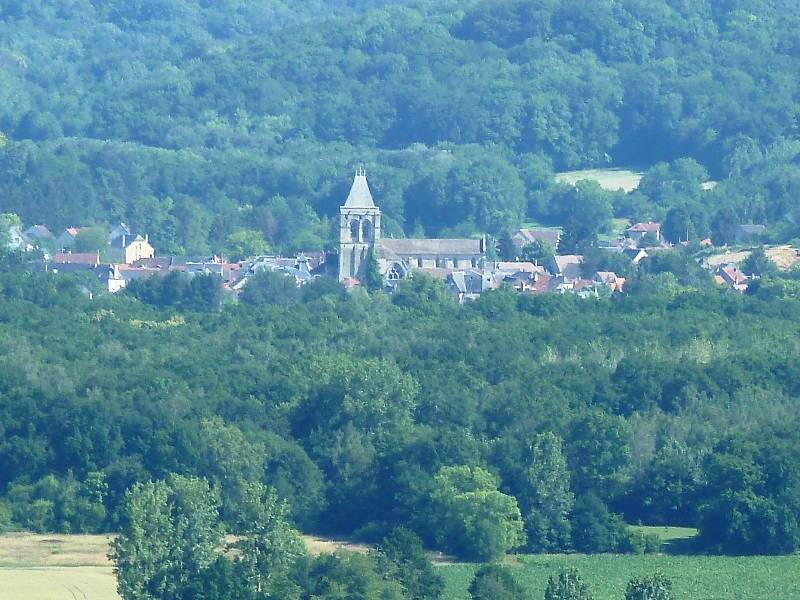
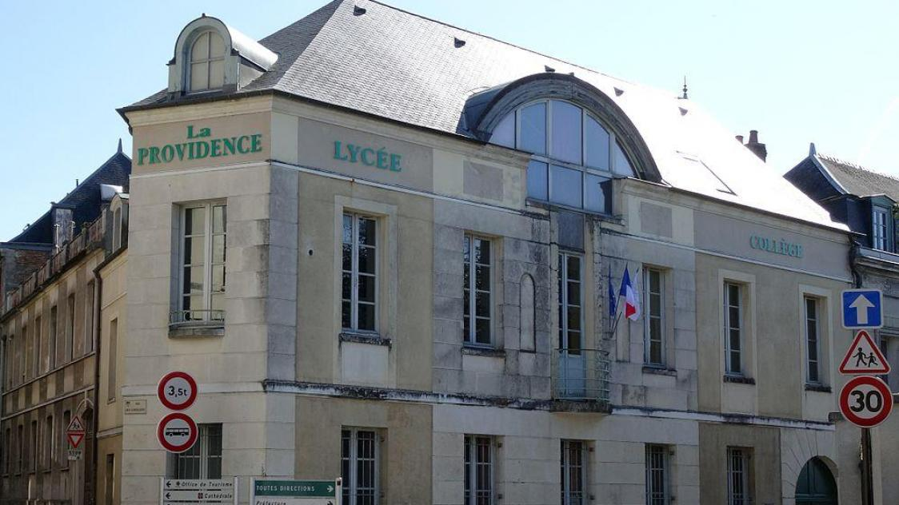
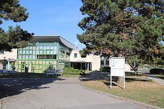
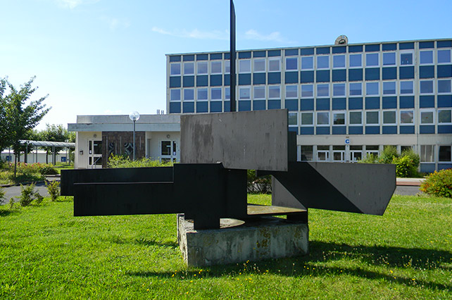

Ma famille
Mon père, David
Ma mère, Sarah
Ma soeur, Mathilde
Mon frère, Matthieu
Mes Origines
Je suis née le 20 mars 2003 à Laon, préfecture du département de l'Aisne.
J'ai passé toute ma jeunesse dans le village de Bruyères et Montbérault.
Mon parcours scolaire
J'étais à l'école primaire du Faubourg Ardon de la ville de Laon
J'étais au collège privé Providence à Laon
J'étais au lycée Pierre Méchain à Laon
J'ai fais une année de dut Informatique à l'IUT de Reims
CV Professionel.
A propos
L'Informatique et les réseaux sont mes deux principales passions.
De nature débrouillard, je ne me laisse pas apeurer par la moindre diffilculté.
Compétences
✔ CSS & HTML
✔ PhP
✔ Python
✔ Réseau
✔ SQL
Langues
Français, Anglais, Allemand
Centre d'intérêts
Informatique
Réseaux
Jeux-vidéos
Musique
Photographie
Nature
FRIMIN Clément
Étudiant BUT Réseaux et Télécommunications.
☎ 06.70.89.51.96
Expériences Professionelles
Août 2020 :
Vendangeur - Champagne Luc Mérat
Juillet 2021 - Octobre 2021 :
Serveur - Buffalo Grill
Novembre 2021 - Décembre 2021 :
Agent de Nettoyage Industriel - Cave Vinicole Pfaffenheim
Février 2022 - Juin 2022
Ouvrier Viticole - pépinières Hebinger
Études
Baccalauréat STI2D
Lycée Pierre Méchain, Laon
Brevet des collèges
Collège la Providence, Laon
Autres Expériences
Scoutisme 2012-2019
Voyage en Irlande de 2 semaines à Vélo
Chef de patrouille
Stage en Architecture
Stage dans le cabinet de M. Merillon - Reims